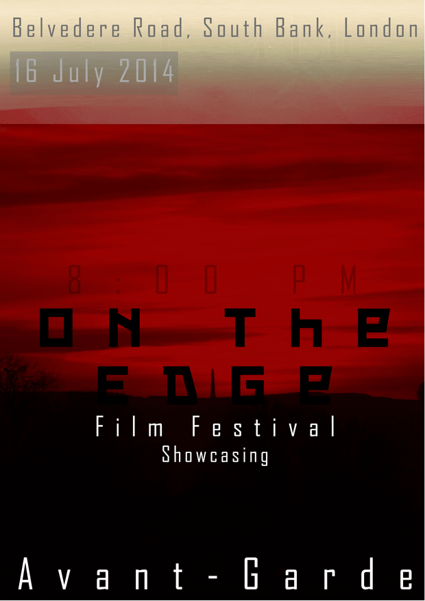
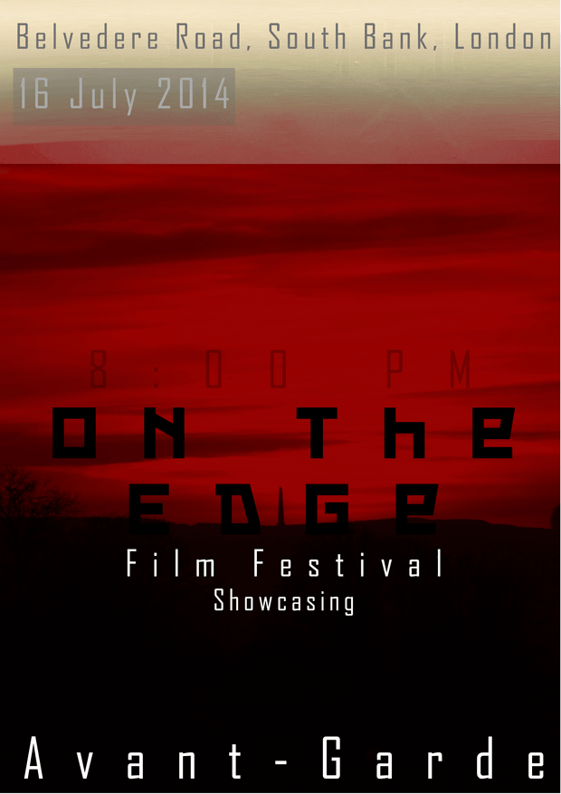
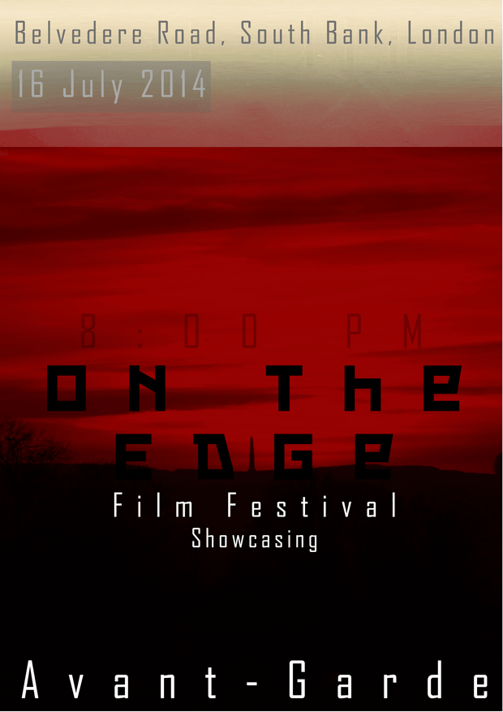

Welcome to the "Work" page, here you will find all of my work that has been submitted for my Graphics GCSE, for download links either Right-Click and select "save taget as..." or head to the downloads page. As well as several websites I have designed.. Check out their individual GitHub pages for more info.
